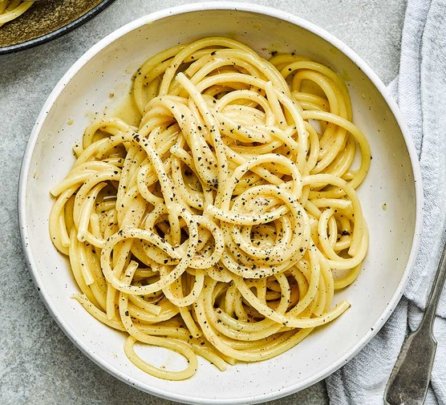

pasta

Description
first make four glass of hot water then add pasta to it.
then add dry and powdered vegetables in the boiling water containing pasta.
aster pasta went soft put it in a Colander.
after its water went less put it in pot and let it cock.
Ingredients
- pasta
- water
- dry vegetables
- tomato sauce
- salt
Steps
- hot water
- Pouring pasta into hot water
- let it boil
- pour pasta in Colander aster went soft
- Pour it into the pot after it dries
- Let it brew for 20 minutes
Go to Main Page